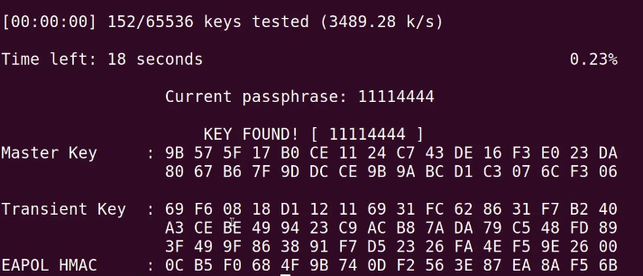

1.3 Mecanismos de protección
1. Falsas medidas de seguridad
Cuando se habla de seguridad en redes inalámbricas, muchas veces se dan algunas recomendaciones que en absoluto mejoran la seguridad y producen al usuario una falsa sensación de protección ante acceso no autorizados. Conviene pues, conocerlas para que no perdamos el tiempo en aplicarlas. Estas falsas medidas son:
- Utilizar WEP como sistema de cifrado: WEP es el primer sistema que se implantó para dotar de protección a las redes wifi y actualmente es posible romper cualquier red wifi protegida con WEP en cuestión de pocos minutos, con técnicas como la inyección de paquetes, el modo monitor para capturar tramas y una herramienta de criptoanálisis como aircrack-ng o wepcrack. Todas estas herramientas se encuentran disponibles en Internet e incluso hay asistentes en algunas distribuciones de auditoría que permiten hacer el proceso sin ser experto. WEP utiliza un algoritmo de cifrado llamado RC4 cuya implementación para redes wifi está rota desde hace muchos años. Por tanto, no se recomienda su uso.
- Usar filtrado de MAC en el AP: muchos puntos de acceso y routers inalámbricos tienen la opción de sólo permitir el acceso a la red wifi a determinados dispositivos usando la dirección física MAC de su tarjeta de red. Es muy fácil ver las direcciones MAC asociadas a un punto de acceso con software de monitorización como airodump-ng y cambiar la MAC de la tarjeta wifi del atacante desde cualquier sistema operativo. Por tanto, no se recomienda usar esta técnica porque es muy fácil saltársela con pocos conocimientos de redes.
- Deshabilitar el anuncio de la red, también como conocido como difusión o broadcast del SSID (Service Set Identifier): todos los puntos de acceso por defecto envían tramas "beacon" con el nombre de la wifi cada 100 milisegundos. De esta forma podemos ver las redes a nuestro alrededor. Si deshabilitamos esta función en el router, nadie puede ver el nombre de nuestra red y conectarse. Pero de nuevo, con herramientas como airodump-ng pueden verse las MAC asociadas a un AP dado (aparece su BSSID, que es la MAC del AP) y el nombre de la red aparece como <hidden> (oculto). Después, es fácil lanzar un ataque de desautenticación contra el cliente asociado haciéndose pasar por el AP, con lo que se fuerza a que el cliente vuelva a asociarse automáticamente y en este momento, el cliente envía el nombre de la wifi (SSID) en la trama de conexión, que es capturada por el atacante. Este proceso se hace en cuestión de pocos segundos.

Herramientas libres de auditoría
Todas las herramientas de auditoría wireless que se han comentando anteriormente, vienen de serie en muchas distribuciones GNU/Linux como Wifislax, Wifiway, nUbuntu, Backtrack, Black Arch, Parrot OS o Kali Linux. De todas ellas cabe destacar Kali Linux, porque es la más actualizada y personalmente opino que es la mejor distribución para seguridad, con muchas herramientas de pentesting, inyección SQL, análisis de aplicaciones web, análisis forense, etcétera.
2. Recomendaciones para Wi-Fi en los centros
A continuación, se citan las recomendaciones más destacables en materia de redes inalámbricas:
- WPA PSK: En caso de no querer aventurarse en montar un RADIUS en el centro con gestión centralizada de usuarios en LDAP, Samba, Active Directory, etc. se recomienda usar WPA3 con AES en la medida de lo posible y una clave compleja. Los expertos en seguridad han revelado que una clave PSK de 20 caracteres alfanuméricos se podría romper por fuerza bruta en una wifi WPA2 (no así en WPA3) usando toda la capacidad de cómputo del planeta en una media de unos 100 años. Las vulnerabilidades de WPA vienen por usar contraseñas débiles, por no cambiar la contraseña ni el nombre de la wifi por defecto o por tener activo WPS. En cualquier caso, no recomiendo WPA PSK en cualquiera de sus versiones en un centro con cientos de usuario. En última instancia esa contraseña compartida es conocida por todos, incluso por gente ajena al centro y por tanto es como no tener contraseña. Si hay algún ataque, no es posible identificar al usuario ya que es la misma contraseña para todos.
- WPA Enterprise: Ya se han comentado las ventajas de este sistema. El problema es la curva de aprendizaje necesaria para gente no experimentada y que es más complejo de administrar un RADIUS o un LDAP/Active Directory. Muchos centros están usando la solución con LliureX que he citado anteriormente.
- No conectarse a redes abiertas bajo ningún concepto ni montar soluciones como portales cautivos abiertos. En las redes wifi abiertas puede conectarse cualquiera que disponga de las herramientas necesarias para hacer ataques MITM (las hay incluso apps para móviles como dSploit, zAnti, Wifikill, etc). Los portales cautivos como los de los hoteles, aeropuertos, cafeterías, etc. que muestran una página web de identificación una vez nos conectamos (portal cautivo) son extremadamente fáciles de saltar con los conocimientos adecuados, a no ser que protejan con algún sistema como claves WPA. Por tanto, no se recomienda la instalación de un portal cautivo abierto con autenticación web pues es fácil atacar el sistema y a los usuarios, así como evitar la autenticación.
- Eliminar las redes abiertas de la lista de redes preferidas, de esta forma, al borrarlas de la lista de nuestro dispositivo, un atacante cerca de nosotros no puede averiguar las redes abiertas a las que nos hemos conectado y crear una red que se llame igual. A esta técnica se le conoce como Rogue AP o Evil Twin. De esta forma nuestro dispositivo se conectaría automáticamente y el atacante podría espiar nuestras comunicaciones.
Deshabilitar WPS, por las razones expuestas anteriormente. Existen herramientas como reaver, que permite atacar este protocolo. - Cambiar contraseñas WPA y nombre de la red por defecto.
Para finalizar, puedes ver las recomendaciones de seguridad de este vídeo de Intypedia, en la línea de las que se han comentado aquí:
3. Mecanismos de protección adicionales (modo paranoico)
A continuación se citan algunas medidas que pueden ser recomendables, si bien se pierde algo de funcionalidad en muchas ocasiones al activarlas:
- Deshabilitar DHCP en el router o punto de acceso wifi.
- Limitar número de clientes asociados.
- Modificar la potencia y direccionalidad de la señal (cambiar antena o usar antena windsurfer).
- Aislar comunicación entre clientes.
- Instalar un firewall en el perímetro entre red cableada e inalámbrica.
- Utilizar entradas ARP estáticas.
Obra publicada con Licencia Creative Commons Reconocimiento No comercial Compartir igual 4.0